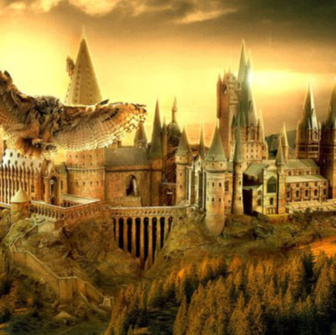
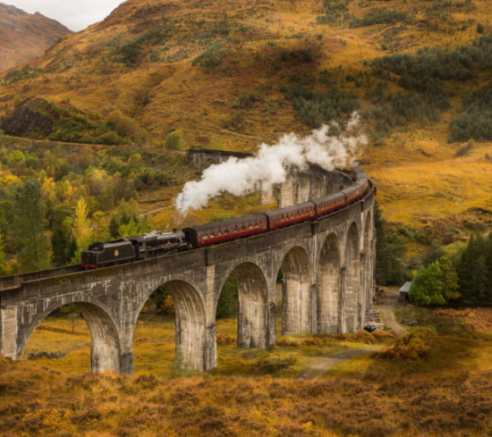

крихтлива хатина (англ. Shrieking Shack) - старий будинок, що стоїть на околиці Хогсміду. З Гоґвортсу в хатину можна потрапити через таємний лаз, що починається під Гремучою вербою. Вона захищає вхід за допомогою своїх довгих і гнучких гілок, руйнуючи все, до чого може дотягнутися. Щоб заспокоїти дерево, необхідно натиснути певний сучок на її стовбурі. Хата стоїть у дикому саду, а її вікна забиті дошками.
Гогсмід (англ. Hogsmeade) - маленьке село, розташована недалеко від Хогвартса, єдиний населений пункт в Великобританії, де зовсім немає маглів. Заснована в середні століття Енгістом з Вудкрофта.
- 
Хогвартс є єдиною школою магії у Великобританії і Ірландії. У неї приймаються діти, які досягли 11 років і які мають магічними здібностями. Навчання триває 7 років. В кінці кожного року здаються іспити, але особливо важливі для майбутнього учнів іспити в кінці п'ятого і сьомого року (СОВ і ЖАБА).
Чорне озеро (англ. Great Lake, or Black Lake) - гірське озеро в Шотландії на території Хогвартса. Є одним з магічних перешкод на шляху до Школи (тому всіх першокурсників доставляють в перший раз в Хогвартс саме по воді) і притулком для численних чарівних мешканців.
- 
«Хогвартс-експрес» (англ. Hogwarts Express) - спеціальний поїзд, покликаний червоним паровозом, призначений для доставки студентів Хогвартса до місця навчання і назад. Іноді «Хогвартс-експрес» доставляє до місця роботи нових викладачів
Квіддічне поле - трибуни глядачів розташовані на вежах, тому що основна дія розгортається в повітрі
Гримуча верба (англ. Whomping Willow, зустрічається також переклад «Дракучей верба») - дерево, посаджене в 1971 році на території Хогвартса. За словами професора Снейпа «є рідкісним екземпляром підвиду плакучих верб». Починає бити гілками будь-який предмет або живу істоту, яка мала необережність потрапити в «зону ураження».
Заборонений ліс (англ. Forbidden Forest) — величезний ліс, який знаходится на території Гоґвортсу. Свою назву ліс отримав за те що учням заборонено ходити туди без супроводу викладачів, бо в ньому мешкає багато небезпечних істот.
Хатина Хагріда (англ. Hagrid's Hut) — це невеликий будиночок, розташований на сході території Гоґвортсу, між замком та Забороненим лісом, неподалік від Головних воріт. У ньому мешкає шкільний лісничий Рубеус Геґрід.